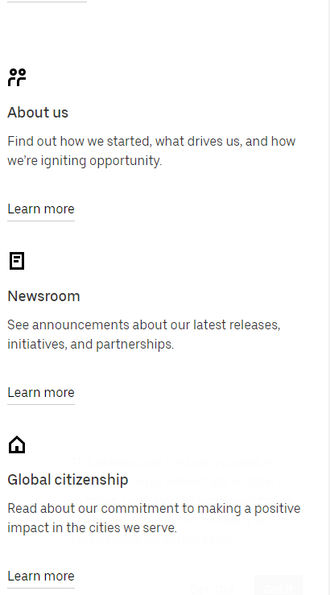
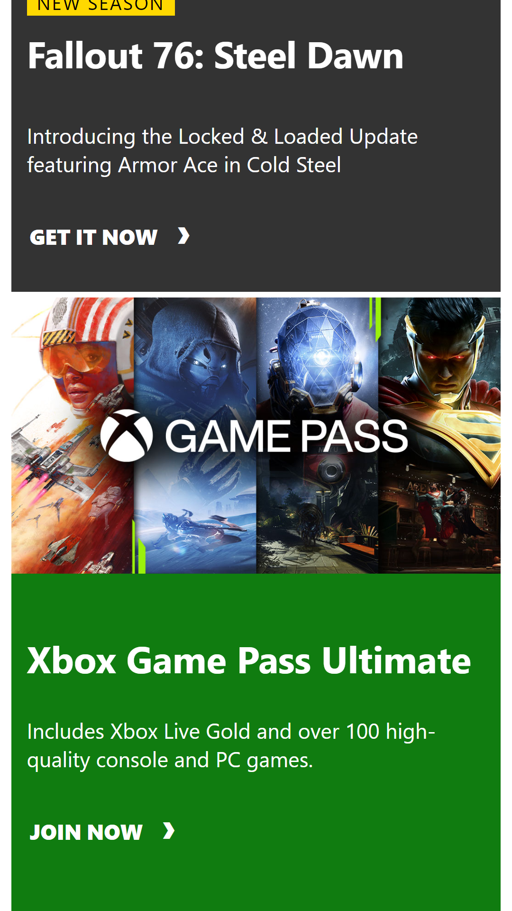

White Space and Clean Design
Apple
www.apple.comEven though there are a lot of boxes, colors, text, and other items on the page, none of those aspects seem “squished”. There is sufficient padding and margins so that all items on the page have enough “real estate” on the page according to their level of importance. Specifically, the 3 boxes and text shown all have a proportional space to take up, even on the mobile device view.
Repetition
Uber
www.uber.com The uber website has great use of repetition. Especially in the middle of the page, the different topics presented have the same place for an icon, the same heading font style, and similar length of text underneath. This repetition provides an aesthetically pleasing interface and provides a sense of organization and “cleanliness” to the site.
Contrast
Xbox
www.xbox.com Xbox utilizes great contrast, both in the text weight as well as the colors throughout the site. Although the text style throughout the site is relatively the same, they are able to compensate for that similarity by making the more important headings/content extremely large compared to the other text. The images provided throughout the page to advertise different games and consoles help provide contrast because of their abundance of color - the rest of the site is either white, gray, or “xbox green”, so adding red, blue, orange, gold, etc. lets the images stand out significantly more.